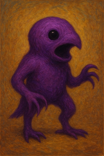
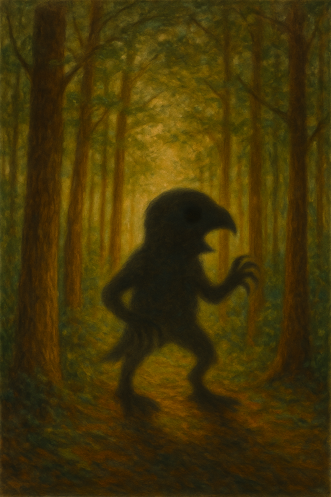

Mysterious Purple Entity Spotted
Locals report seeing a purple entity moving through Jird Land skies. Dubbed “The Jird,” it only speaks in cryptic sounds and reportedly revives people in its path.
Your source for all things Jird

Locals report seeing a purple entity moving through Jird Land skies. Dubbed “The Jird,” it only speaks in cryptic sounds and reportedly revives people in its path.
Residents of Jird Land claim to float spontaneously. Experts are skeptical, but the reports keep coming in. Sacrifices and offerings appear in the area as well.

“It only spoke Jird,” says the witness. “I felt hopeful… somehow.” Descriptions of purple shadows, whispers, and revival phenomena continue to spread.
Jird Land is a place of mystery, murder, and sacrifice. Only one Jird rules here. Its presence is both feared and revered by locals and adventurers alike.